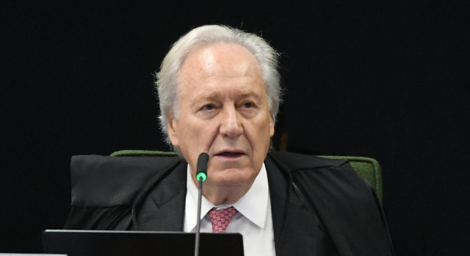
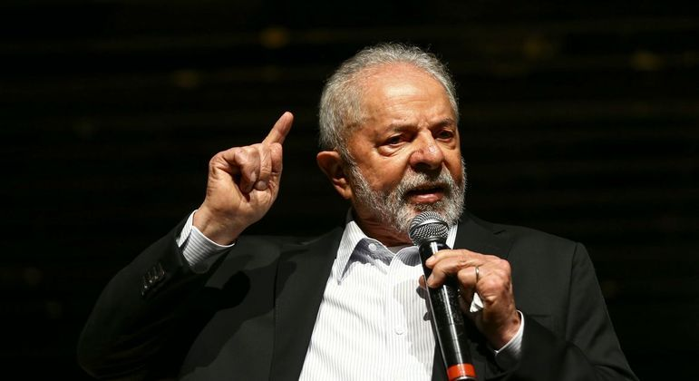
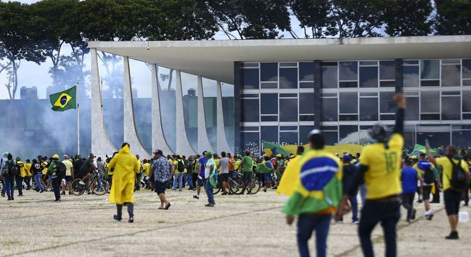
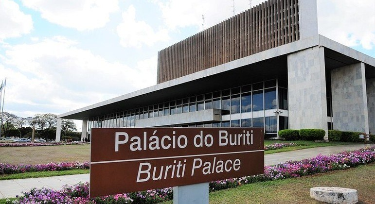
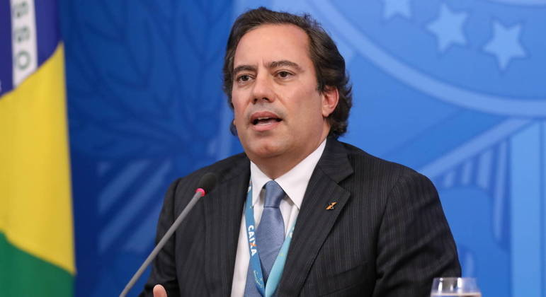
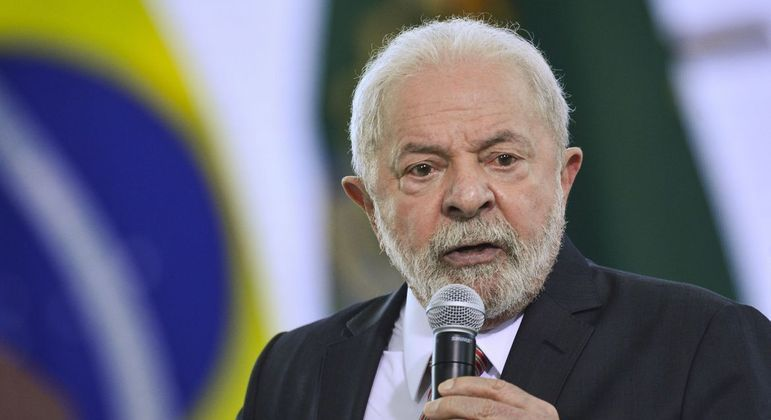

29/03/2023
Presidente do BC organiza seminário com ministros para debater taxa de juros
Encontro deve ser realizado no plenário do Senado depois da Páscoa; Tebet e Haddad devem participar da reunião
O ministro das Relações Institucionais, Alexandre Padilha, informou que o presidente do Banco Central, Roberto Campos Neto, organiza, com integrantes do primeiro escalão do governo e empresários, uma espécie de seminário para debater a taxa de juros no Brasil, atualmente em 13,75%.
A informação de que Campos Neto organiza o seminário foi relatada pelo presidente do Senado, Rodrigo Pacheco (PSD-MG), durante conversa com Luiz Inácio Lula da Silva (PT), nesta terça-feira (28), no Palácio da Alvorada.

30/03/2023
Ricardo Lewandowski vai se aposentar do STF em 11 de abril
O ministro antecipou a saída do Supremo em um mês; o substituto dele será definido pelo presidente Luiz Inácio Lula da Silva (PT)
O ministro do Supremo Tribunal Federal (STF) Ricardo Lewandowski anunciou que vai se aposentar em 11 de abril. Ele deixaria a Corte de forma compulsória em 11 de maio, quando completaria 75 anos, mas decidiu antecipar a saída em um mês.
“Essa minha antecipação se deve a compromissos acadêmicos e profissionais que me aguardam. Eu, agora, encerro um ciclo da minha vida e vou iniciar um novo ciclo”, afirmou Lewandowski em entrevista à imprensa.
31/03/2023
Nova regra fiscal representa avanço para as contas públicas, dizem especialistas
Economistas acreditam em redução da dívida do país com novos limites sobre gastos; projeto precisa da aprovação do Congresso
O chamado arcabouço fiscal, que é a nova proposta do governo federal para controlar os gastos, significa um avanço para as contas públicas do país, na avaliação de economistas. O projeto foi apresentado nesta quinta-feira (30) pelo Ministério da Fazenda e precisa do aval do Congresso Nacional para entrar em vigor.
A medida vai servir, basicamente, para impor limites para a criação de novas despesas por parte do governo federal e impedir que o Executivo gaste mais do que pode e deixe o país no vermelho. Na opinião do presidente da Federação Brasileira de Bancos (Febraban), Isaac Sidney, o programa é positivo.

31/03/2023
Lula pede que Congresso retire de pauta projeto que prevê mineração em terra indígena
Mensagem foi enviada pelo presidente Lula e publicada nesta sexta-feira (31) no Diário Oficial da União
O presidente Luiz Inácio Lula da Silva (PT) solicitou nesta sexta-feira (31) ao Congresso Nacional que retire de tramitação o projeto de lei que regulamenta a exploração de minério em reservas indígenas. Agora, caberá aos parlamentares a palavra final. O pedido foi publicado no Diário Oficial da União desta sexta.
A proposta foi apresentada em 2020 pelo ex-presidente Jair Bolsonaro (PL), que defende a mineração nessas regiões sob a justificativa de que o Brasil pode sofrer com falta de potássio, matéria-prima de fertilizantes. A matéria visa permitir a realização de pesquisa e da lavra de recursos minerais e do aproveitamento dos potenciais de energia hidráulica em terras indígenas.

31/03/2023
Moraes nega liberdade a homem que levou réplica da Constituição durante atos extremistas
Para o ministro, há elementos concretos que justificam a prisão; liberdade representaria 'comprometimento da ordem pública'
O ministro Alexandre de Moraes, do Supremo Tribunal Federal (STF), negou um pedido de liberdade e manteve a prisão de Marcelo Fernandes Lima, extremistas que levou a réplica da Constituição de dentro do STF durante atos de vandalismo de 8 de janeiro.
No pedido, a defesa alegou que o homem é réu primário, com bons antecedentes, trabalha, tem residência fixa, é pai de cinco filhos, sendo um deles portador de deficiência intelectual.

31/03/2023
CCJ da Câmara Legislativa do DF discute reajuste de servidores do Executivo nesta sexta-feira
Projetos concedem aumento de 18% aos efetivos e de 25% aos ocupantes de cargos comissionados
A Comissão de Constituição e Justiça (CCJ) da Câmara Legislativa do Distrito Federal (CLDF) analisa, nesta sexta, os projetos de lei do Governo do DF que concedem reajuste de salário aos servidores do Executivo local. A proposta é aumentar a remuneração dos efetivos em 18% e a dos ocupantes de cargos comissionados em 25%.
Os projetos de lei 237 e 238/2023 chegaram à Câmara nesta quinta-feira (30) e a expectativa de parlamentares é que sejam votados em plenário já na próxima semana.

31/03/2023
Pedro Guimarães vira réu em caso que denunciou assédio na Caixa
Economista foi denunciado por episódios de aproximação física e toques indesejados; as investidas teriam ocorrido durante viagens
O ex-presidente da Caixa Econômica Federal Pedro Guimarães tornou-se réu no caso em que é suspeito de assédio sexual e moral a funcionários do banco. A Justiça Federal de Brasília aceitou, na quinta-feira (30), a denúncia feita pelo Ministério Público Federal (MPF). O caso está em segredo de Justiça, e não foram divulgados detalhes da pena pedida pelo MPF.
Pedro Guimarães esteve na presidência da Caixa por três anos e seis meses e pediu demissão em junho de 2022 depois de se tornar alvo de investigações do MPF e do Tribunal de Contas da União (TCU).

31/03/2023
Planalto confirma viagem de Lula à China em 11 de abril
Petista deve se encontrar com Xi Jinping e comparecer à cerimônia de posse de Dilma Rousseff como presidente do banco do Brics
O Palácio do Planalto confirmou a viagem do presidente Luiz Inácio Lula da Silva (PT) à China em 11 de abril. O petista iria ao país asiático em 25 de março, mas cancelou a comitiva depois de ter recebido o diagnóstico de pneumonia. Após o cancelamento, ambos os governos articulavam uma nova data. O Planalto, então, sugeriu 11 de abril, e a China deu o sinal verde.
Desde então, Lula tem despachado do Palácio da Alvorada, residência oficial do presidente. Segundo fontes, o petista deve voltar a trabalhar do Planalto na próxima segunda-feira (3). Ele deve manter agendas similares nessa nova viagem.